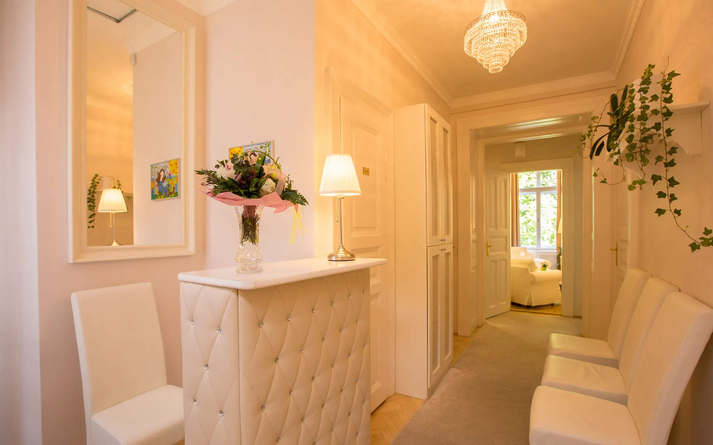

Kapcsolat és megérkezés
Mészáros utca 18.,
első emelet
Budapest I., a Krisztina körút közelében. Kapucsengő, egy lépcsőforduló, nincs lift. Rendelés hétköznap 8-20, ügyfélszolgálat 9-15.
Így talál ide
Cím
1016 Budapest, Mészáros utca 18. A rendelők az I. emelet 15. és a II. emelet 18. ajtó mögött. A kapun a Budai Pszichológus Központ tábla.
Kapu és kód
A bejárati kódot az időpont visszaigazolásában küldjük. Ha nem találja, hívjon, és megmondjuk.
Nincs lift
Az első emelet egy lépcsőforduló, a második kettő. Ha a lépcső nehézség, jelezze időpontkérésnél, és az első emeleti szobát kérjük a szakembertől.
Parkolás
Utcai, hétköznap fizetős zóna. Érdemes tíz percet ráhagyni a helykeresésre.
Tömegközlekedés
A Krisztina körút megállóitól néhány perc séta. A pontos útvonalat a megszokott térkép-alkalmazás adja a Mészáros utca 18. címre.
Ha eltéved a házban, hívjon: +36 30 961 1364. Valaki lejön Önért.
Időpontkérés
Három kérdés, aztán visszahívjuk
Kinek, miben, mikor. Ennyit kérdezünk. Nem kell tudnia, melyik módszer kell, és nem kell szakembert választania, ha nem akar. Hétköznap 9 és 15 óra között visszahívjuk.
Az űrlapon megadott adatokat kizárólag az időpont egyeztetéséhez használjuk. Részletek az adatkezelési tájékoztatóban.
Ha most van baj: Lelki Elsősegély 116-123 (ingyenes, éjjel-nappal), sürgősség 112. A Központ nem ügyelet, időpontra fogad.